class: center, middle # EE-462 UTILIZATION OF ELECTRICAL ENERGY # Induction Motor Drives ## Ozan Keysan ## [keysan.me](http://keysan.me) ### Office: C-113 <span class="meta">•</span> Tel: 210 7586 --- # Speed Control Problems --- # Voltage Control Techniques --- ## SCR Based AC Voltage Controller <img src="http://www.daenotes.com/images/3-phase-motor-control-using-SCR.JPG" alt="Drawing" style="width: 500px;"/> ### Generates sinusoidal voltages and hence only preferred in small motors (with fan loads) --- ## SCR Based AC Voltage Controller ### AC voltage is chopped, so that RMS value is reduced 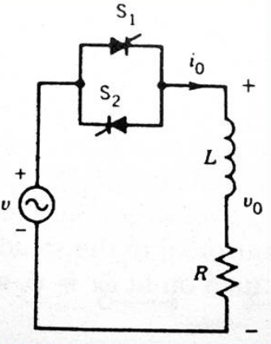 --- ## SCR Based AC Voltage Controller ### AC voltage is chopped, so that RMS value is reduced 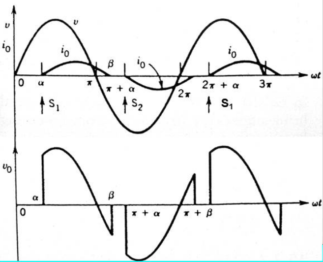 --- ## Speed Control by Rotor Resistance Control 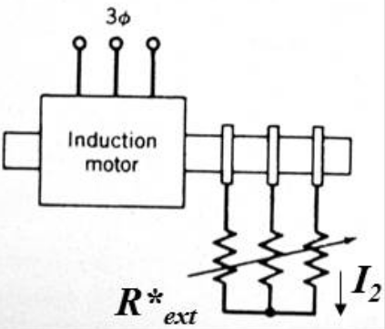 --- ## Speed Control by Rotor Resistance Control 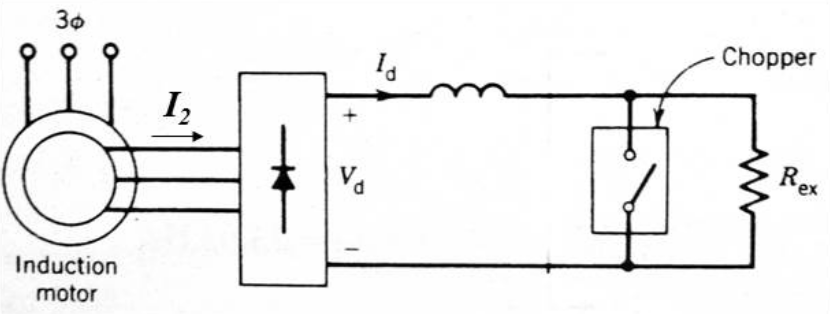 ### Duty cycle of the chopper can be adjusted to control the equivalent resistance. --- ## Speed Control by Rotor Resistance Control 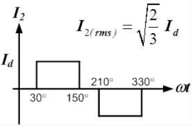 -- ### Power dissipated in resistor: -- \\(P\_{av}=I\_d^2 R\_{ex} (1-D)\\) -- ### \\(P\_{av}=3 I\_{2(rms)}^2 R\_{ex-eq}\\) -- ### \\(R\_{ex-eq}=\dfrac{1}{2} (1-D) R\_{ex}\\) --- ## Speed Control by Rotor Resistance Control 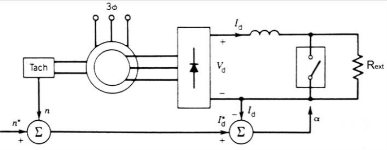 ### \\(P_{ag}=T \omega_s\\) -- ### \\(P\_{rotor} = s P\_{ag} \approx V\_d I\_d = \dfrac{3\sqrt{6}}{\pi} s E\_2 I\_d\\) --- ## Speed Control by Rotor Resistance Control ### \\( s P\_{ag} = s T \omega_s = s \dfrac{3\sqrt{6}}{\pi} E\_2 I\_d\\) ### \\(T \propto I_d\\) --- ## Rotor Slip Energy Recovery ### Instead of dissipating return to source <img src="http://circuitglobe.com/wp-content/uploads/2016/02/SLIP-ENERGY-RECOVERY-FIGURE.jpg" alt="Drawing" style="width: 700px;"/> --- ## Rotor Slip Energy Recovery 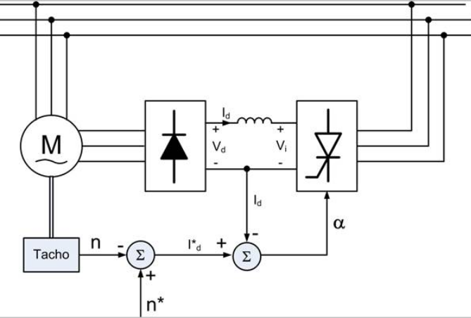 ### For torque control measure Id and vary firing angle --- ## Speed Control via Line Frequency Control ### \\(T\_e = \dfrac{3 V\_{th}^2}{(R\_{th}+\dfrac{r'\_2}{s})^2 + (X\_{th}+X'\_2)^2}\dfrac{r'\_2}{s \omega\_s}\\) --- # Linear Approximation of Torque -- ## Accurate torque expression ### Valid for all values of slip ### \\(T\_e = \dfrac{3 V\_{th}^2}{(R\_{th}+\dfrac{r'\_2}{s})^2 + (X\_{th}+X'\_2)^2}\dfrac{r'\_2}{s \omega\_s}\\) -- ### However, under steady-state conditions, slip is usually very small (<5%) --- # Linear Approximation of Torque ## \\(s < 0.05\\) -- ## \\(\dfrac{r\_2'}{s} >> R\_{th}, X\_{th}, X\_{2}'\\) ### Torque equation becomes -- ### \\(T\_{e} \approx \dfrac{3 V\_{th}^2 s}{r'\_2 \omega\_s}\\) --- # Linear Approximation of Torque ## \\(T\_{e} \approx \dfrac{3 V\_{th}^2 s}{r'\_2 \omega\_s}\\) ## \\(T\_{e} \approx k s\\) ## (only valid for small values of s) --- # Speed Control via Line Frequency Control ## What happens if we reduce f, with constant V? -- ## \\(\Phi\\) increases, core will saturate ## Not desirable! -- ## How can we keep \\(\Phi\\) constant? --- # Speed Control via Line Frequency Controls ## Constant V/f (or Constant Flux) Operation --- # Constant V/f Operation ### Alternative representation of linear torque expression ### \\(T\_{e} \approx \dfrac{3 V\_{th}^2 s}{r'\_2 \omega\_s}\\) -- \\(= \dfrac{3 V\_{th}^2 s}{r'\_2 \omega\_s} \dfrac{\omega\_s}{\omega\_s}\\) -- ## \\(T\_{e} \approx \dfrac{3}{r'\_2} {(\dfrac{V\_{th}}{\omega\_s})}^2 \omega\_{slip}\\) ## Torque is proportional to slip speed! --- # Constant V/f Operation 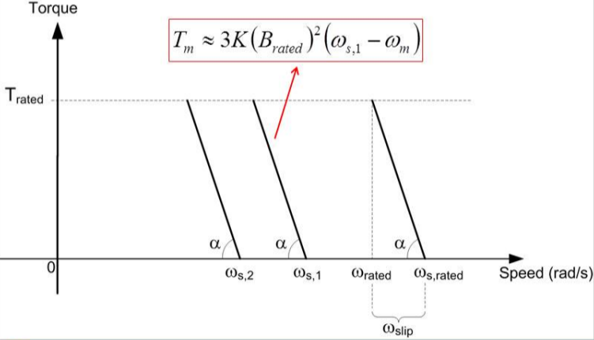 --- # Example -- ## 3-Phase, 440 V, 60 Hz, 10 hp, 1746 rpm, 4-pole induction motor is driven by constant flux operation. -- ### a) Plot torque-speed curve (linear portion) for the stator terminal frequencies of 60 Hz and 45 Hz. -- ### b) For a squared-power load, which requires rated torque at rated speed, calculate the operating speeds. --- ### Use a Variable Voltage-Frequency Source <img src="http://radio.feld.cvut.cz/matlab/toolbox/powersys/stud_c56.gif" alt="Drawing" style="width: 650px;"/> --- # Constant Flux Operation ### \\(T\_{max}\\) is constant <img src="http://www.scielo.br/img/revistas/jbsmse/v29n1/a04fig01.gif" alt="Drawing" style="width: 400px;"/> -- ### What happens if the speed is increased beyond rated speed under V/f control? --- # Flux Weakening Range ### If the torque is kept constant at high speeds, power limit will be exceeded ### Even if you wanted to increase, there may be a limit on the input voltage level <img src="http://lh6.ggpht.com/_X6JnoL0U4BY/S1huqYNgsAI/AAAAAAAAINw/Fo55efK7w8s/tmp32315_thumb1_thumb.png?imgmax=800" alt="Drawing" style="width: 450px;"/> --- # Constant Flux Operation <img src="http://www.ece.umn.edu/users/riaz/animations/vf3.gif" alt="Drawing" style="width: 400px;"/> --- # Flux weakening <img src="http://www.gozuk.com/image/vf-pattern.jpg" alt="Drawing" style="width: 700px;"/> --- # Constant V/f Operation ## Remember, we assumed \\(V\_1 \approx E\_1\\) -- ## This assumption is less valid when: -- - ### High loads (I is high) -- - ### Lower speeds (voltage drop on R is more visible) -- ## Need to boost the voltage to neutralize this effect! --- # Constant V/f Operation with Voltage Boost 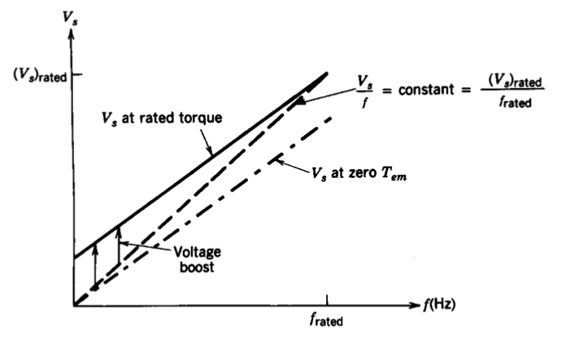 --- # 3-Phase Voltage Source Inverter (VSI) -- ## Two level VSI 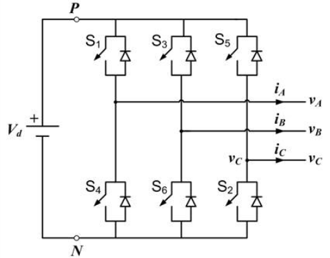 --- # 3-Phase Voltage Source Inverter (VSI) ## Operating Principle ### Do not close: - ### S1 and S4 - ### S3 and S6 - ### S2 and S5 ## never at the same time! --- ## Square wave 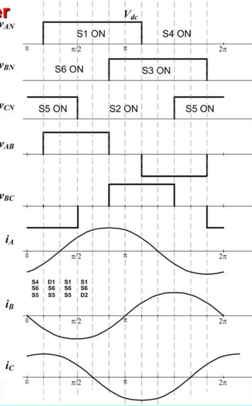 --- ## PWM with Two-Level VSI 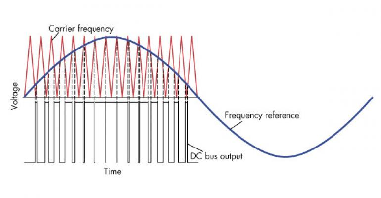 --- ## PWM with Two-Level VSI 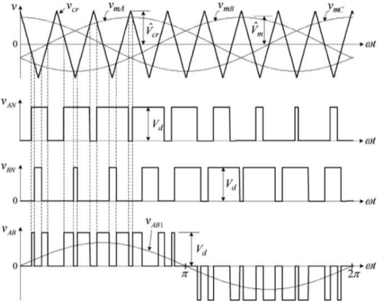 --- ## PWM with Two-Level VSI ### Amplitude modulation index ## \\(m\_a=\dfrac{\hat{V}\_m}{\hat{V}\_{cr}}\\) ### Frequency modulation index ## \\(m\_f=\dfrac{f\_{cr}}{f\_m}\\) --- ## PWM with Two-Level VSI ### For modulation index: 0 <m <1: ## \\(V1\_{ll} = \dfrac{\sqrt{3}}{2\sqrt{2}} m\_a V\_d = 0.612 m\_a V\_d\\) --- ## Typical Voltage-Current Waveforms 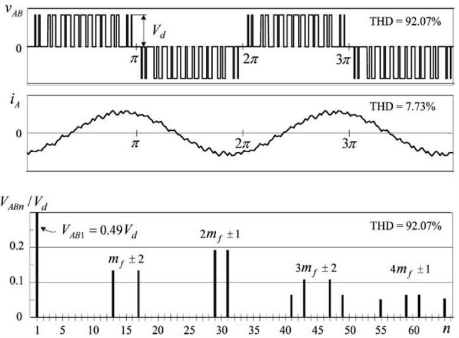 --- ## Overmodulation (m>1) <img src="./images/ee462/vsi_pwm4.png" alt="Drawing" style="width:550px;"/> --- ## Overmodulation (m>1) 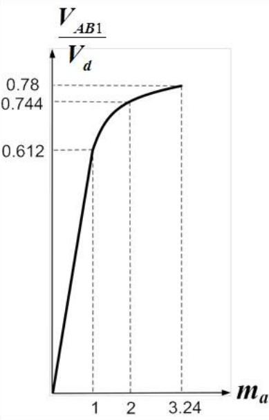 --- ## VSI Controller 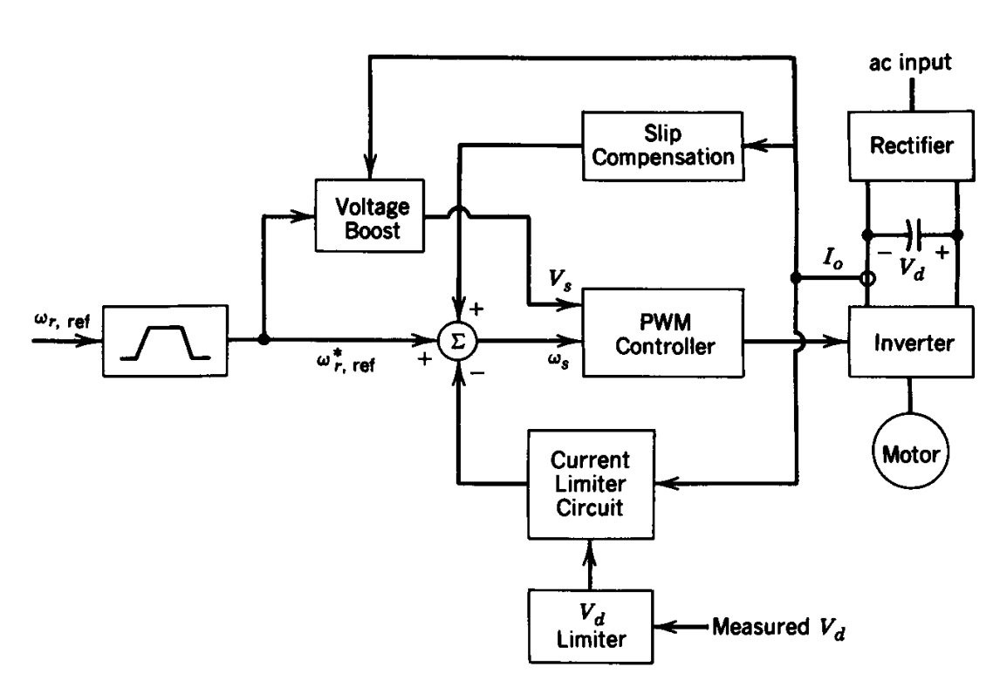 --- ## Drive Topologies -- ### PWM-VSI with a Diode Rectifier 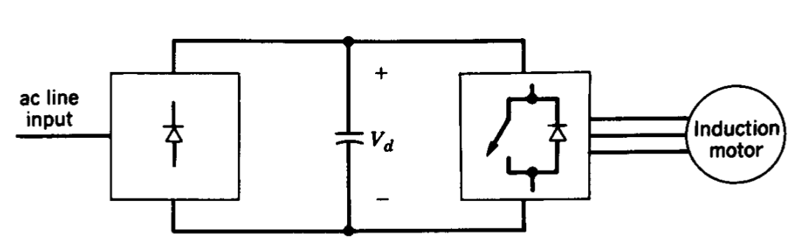 --- ## Drive Topologies ### Square Wave-VSI with a Controlled Rectifier 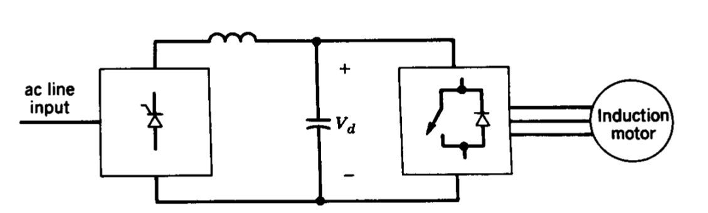 --- ## Drive Topologies ### Current Source Inverter 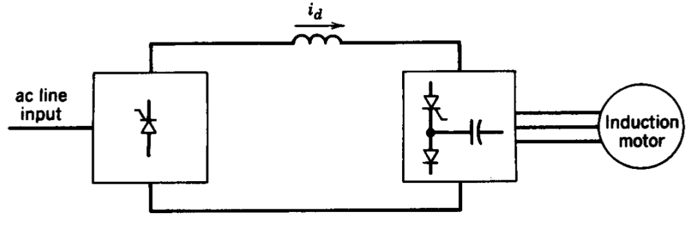 --- ## Drive Topologies ### Current Source Inverter 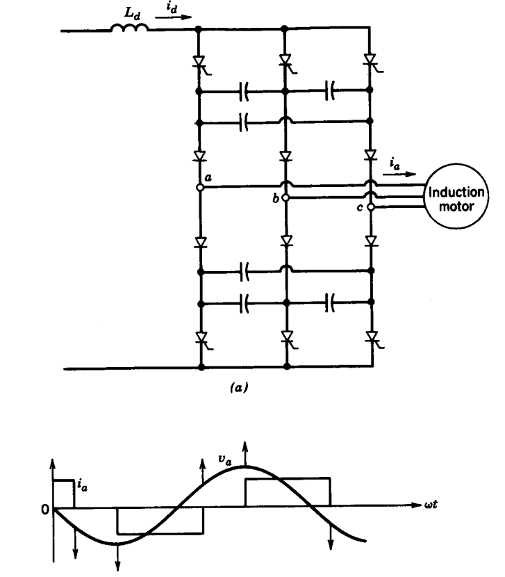 --- # Challenges of Variable Frequency Drives --- ## High Dynamic Performance -- ## Low Inertia Rotor <img src="https://www.toyodenki.co.jp/en/products/industrial/lineup/motor/img/dsd-02.jpg" alt="Drawing" style="width:600px;"/> ### But beware of natural frequencies (especially at high speeds) --- # Thermal Challenges -- ## Variable Speed vs. Cooling -- <img src="http://www.newpages2u.com/images/1383893906bb9b6dc038900e31425bd8c6c9203257.jpg" alt="Drawing" style="width:500px;"/> ### Induction Motor Internal Fan --- ## Variable Speed vs. Cooling <img src="http://img.directindustry.com/images_di/photo-g/162644-10119156.jpg" alt="Drawing" style="width:400px;"/> ### Motor with External Fan --- ## Variable Speed vs. Cooling <img src="https://s-media-cache-ak0.pinimg.com/originals/f7/08/d6/f708d62b036887f0a1356c9f3dff35d1.gif" alt="Drawing" style="width:600px;"/> ### Inverter driven motors usually equipped with PTC thermistors --- ## Variable Speed vs. Cooling <img src="http://www.globalspec.com/npapics/70/112662_110620121180_ExhibitPic.jpg" alt="Drawing" style="width:400px;"/> ### Inverter driven motors usually equipped with PTC thermistors --- # Additional Losses -- - ## Stator-rotor copper losses ## \\(P\_{loss}=3 \sum_{k=1}^{\infty} (R\_s + R\_r') I^2_k \\) -- - ## Core losses! --- ## Derating of a general purpose motor <img src="http://www.acdrive.org/image/harmonic-voltage-factor.jpg" alt="Drawing" style="width:500px;"/> ### \\(HVF = \sqrt{ \sum_{k=5}^{\infty} (\dfrac{V_n}{n})^2} \\) #### More info: [WEG-Inverter Driven Motors](http://ecatalog.weg.net/files/wegnet/WEG-induction-motors-fed-by-pwm-50029350-technical-article-english.pdf) --- # Challenges: Life-time -- ## High dv/dt! ### With IGBT it can be around 3000V/μS -- ## Reduces the insulation lifetime -- ## Introduce additional losses (core) -- ## Puts a limit on the motor cable length [More info-ABB](https://library.e.abb.com/public/fec1a7b62d273351c12571b60056a0fd/voltstress.pdf) --- # High dv/dt filters -- <img src="https://www.lcautomation.com/Images/ocw/6446_401_300.jpg" alt="Drawing" style="width:350px;"/> #### A few commercial products: [Eagtop](http://www.passivedevice.com/5-8-dvdt-filters.html), [MTECorp](http://www.mtecorp.com/pages_lang/wp-content/uploads/INSTR-019Rel041119dVdTFilterSeriesA440-600VACUserManual.pdf), [Schaffner](http://www.schaffner.com/products/power-magnetics/dvdt-filters/) #### A better but more expensive product is [sine wave filters](http://chziri.com/en/Catalogue/Sine-Wave-Filter-24.html) --- # Challenges: Life-time ## Bearing/Shaft Currents -- 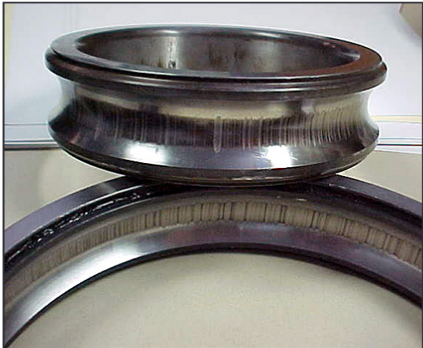 #### [Further Info](http://www.kyservice.com/wp-content/uploads/2017/03/EASA-Shaft-Bearing-Currents.pdf) --- # Challenges: Life-time ## Bearing/Shaft Currents 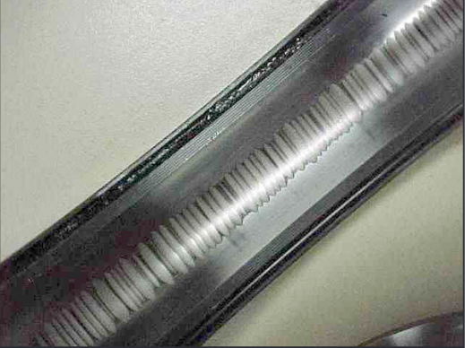 #### [Further Info](http://www.kyservice.com/wp-content/uploads/2017/03/EASA-Shaft-Bearing-Currents.pdf) --- # Challenges: Life-time ## Bearing/Shaft Currents 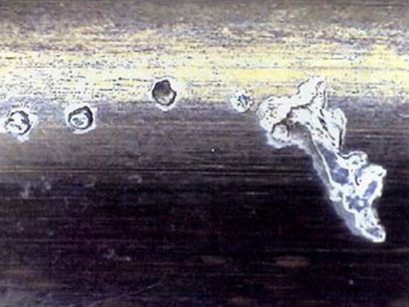 #### [Further Info](http://www.kyservice.com/wp-content/uploads/2017/03/EASA-Shaft-Bearing-Currents.pdf) --- # Challenges: Life-time ## Bearing/Shaft Currents <img src="http://www.vibescorp.ca/eibd_images/3.jpg" alt="Drawing" style="width:750px;"/> #### [Further Info](http://www.kyservice.com/wp-content/uploads/2017/03/EASA-Shaft-Bearing-Currents.pdf) --- ## Bearing/Shaft Currents ### Reduction: Use Symmetrical multi-core cable ### Use HF Bonding Strap <img src="./images/ee462/symmetrical_cable.png" alt="Drawing" style="width:600px;"/> #### [Further Info-ABB Application Note](https://library.e.abb.com/public/8c253c2417ed0238c125788f003cca8e/ABB_Technical_guide_No5_RevC.pdf) --- ## Bearing/Shaft Currents ### Reduction: Use Common Mode Chokes <img src="http://www.mhw-intl.com/wp-content/uploads/2012/01/MHW-M117-2-Clamp-System.jpg" alt="Drawing" style="width:500px;"/> #### [Common Mode Chokes](http://www.mhw-intl.com/applications/by-solution/cmc/) --- ## Bearing/Shaft Currents ### Reduction: Use Ceramic Bearing ### Ceramic is not conducting, hence no bearing currents <img src="http://www.bocabearings.com/Files/Images/Full-Ceramic-Bearings-1.jpg" alt="Drawing" style="width:600px;"/> --- # Harmonics Effects <img src="https://www.mathworks.com/help/physmod/sps/ref/pwm_generator_three_phase_three_level_model_plot.png" alt="Drawing" style="width:700px;"/> --- # Inverter Harmonics -- <img src="http://www.acdrive.org/image/harmonic-torques.jpg" alt="Drawing" style="width:700px;"/> ### Torque due to higher frequency current harmonics --- # Inverter Harmonics ## Over-modulation range ### Would you prefer Wye or Delta connection to reduce harmonics? -- ### Would you prefer Wye or Delta connection for higher speed operation? --- ## Motor Harmonics 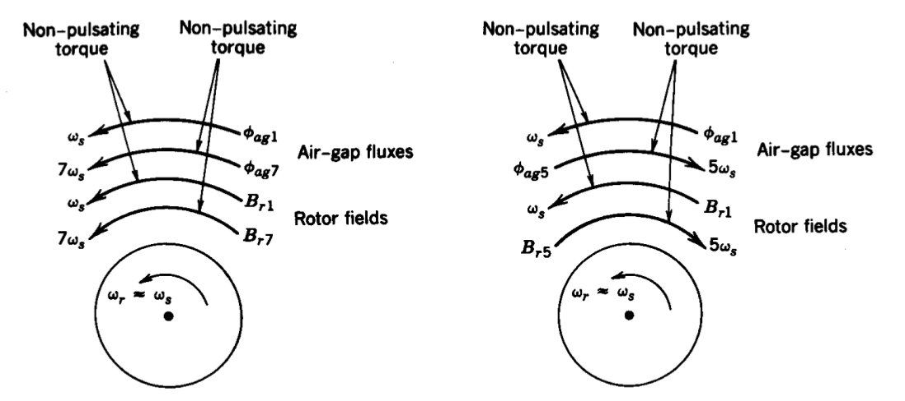 ### Torque Pulsations --- ## Crawling Speed <img src="http://www.eeeguide.com/wp-content/uploads/2016/10/Cogging-and-Crawling-1.jpg" alt="Drawing" style="width:650px;"/> --- ### Cogging Torque -- ### Why does the rotor is skewed? <img src="https://upload.wikimedia.org/wikipedia/commons/thumb/f/fc/Wirnik_by_Zureks.jpg/1200px-Wirnik_by_Zureks.jpg" alt="Drawing" style="width:550px;"/> --- # Acoustic Noise -- : Fan Blades <img src="https://www.turbines-rc.com/4612-thickbox_default/changesun-12-blade-64mm-edf-ducted-fan-2600kv-motor-4s.jpg" alt="Drawing" style="width:300px;"/> ## Can you guess the frequency of the noise? -- ## \\(f= N\_{blades}*f\_{rotor}\\) --- # Acoustic Noise -- : Magnetic Pull <img src="http://www.evtechexpo.com/assets/files/images/news%20pages/Exhibitor%20News/MDL_%20Equipmake_EVTech_Newsletter_11_March_2016_Picture.jpg" alt="Drawing" style="width:300px;"/> ## Can you guess the frequency of the noise? -- ## Most dominant: \\(2*f\_{switching}\\) ### Avoid noise around 2 kHz ([Online Tone Generator](http://onlinetonegenerator.com/)) --- # Dunning-Kruger Effect -- <img src="https://media.licdn.com/mpr/mpr/shrinknp_800_800/AAEAAQAAAAAAAAgdAAAAJDZjNzZlZWRlLTNiZWYtNGI3OS05YWEwLThhNWMwNjY1YjViZQ.jpg" alt="Drawing" style="width:500px;"/> --- # Dunning-Kruger Effect <img src="https://www.cheatography.com/uploads/davidpol_1447558649_dunning-kruger-0011.jpg" alt="Drawing" style="width:750px;"/> --- ## You can download this presentation from: [keysan.me/ee462](http://keysan.me/ee462)